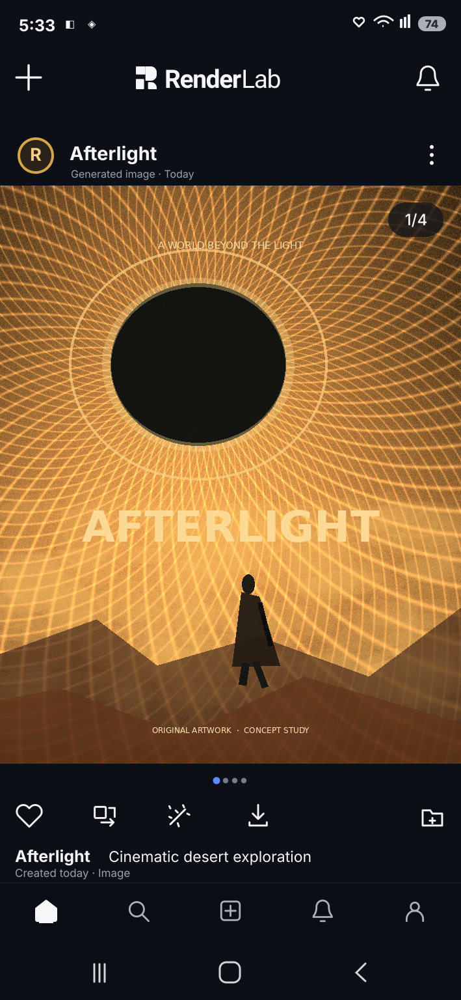

Library Feed
Browse is a second root presentation of the same private Library.
Path to inspect: Feed → Browse → Collections → Landscapes → Android Back → Browse controls → Generated → clear selected filter. The root dock appears only on root screens. Collections is an organization view, while Generated and Uploads are source filters applied to Items.
Filter toggles and buttons switch illustrations only. Media downloads, uploads, search, collection writes, favorite operations, backend error handling and OS permissions remain unimplemented. Real Android touch sizes, deep links, TalkBack, font scaling, RTL and reduced motion require separate validation.